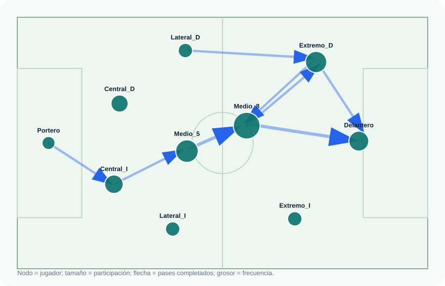

{kind=link}
Qué aprenderás aquí
- Cómo pasar desde una tabla de eventos a una red.
- Qué son nodos, aristas, pesos y matriz de adyacencia.
- Cómo leer la circulación de pases sin quedarse solo en totales.
Convierte una tabla de pases en una red: los jugadores son nodos, los pases son enlaces y la estructura permite ver cómo circula el juego.
El caso parte desde una tabla de eventos. En datos reales podría venir de StatsBomb o Metrica Sports; aquí usamos un CSV pequeño para que el flujo sea reproducible.
# Load the demo pass event data.
from pathlib import Path
import pandas as pd
DATA_PATH = Path("pases_futbol_demo.csv")
passes = pd.read_csv(DATA_PATH)
passes.head(8)# Load the demo pass event data.
library(readr)
library(dplyr)
library(knitr)
passes <- read_csv("pases_futbol_demo.csv", show_col_types = FALSE)
passes |>
head(8) |>
kable()| minute | team | from_player | to_player | x_start | y_start | x_end | y_end | outcome |
|---|---|---|---|---|---|---|---|---|
| 3 | Equipo Demo | Portero | Central_I | 8 | 34 | 24 | 23 | Complete |
| 4 | Equipo Demo | Central_I | Medio_5 | 25 | 23 | 42 | 32 | Complete |
| 5 | Equipo Demo | Medio_5 | Medio_8 | 43 | 32 | 56 | 38 | Complete |
| 6 | Equipo Demo | Medio_8 | Extremo_D | 58 | 38 | 77 | 55 | Complete |
La edge list resume quién le pasa a quién y cuántas veces. El peso del enlace será la frecuencia de pases completados entre dos jugadores.
# Build a directed weighted edge list.
completed = passes.query("outcome == 'Complete'").copy()
edges = (
completed
.groupby(["from_player", "to_player"], as_index=False)
.agg(
pass_count=("minute", "size"),
x_start=("x_start", "mean"),
y_start=("y_start", "mean"),
x_end=("x_end", "mean"),
y_end=("y_end", "mean"),
)
.sort_values("pass_count", ascending=False)
)# Build a directed weighted edge list.
completed <- passes |>
filter(outcome == "Complete")
edges <- completed |>
group_by(from_player, to_player) |>
summarise(
pass_count = n(),
x_start = mean(x_start),
y_start = mean(y_start),
x_end = mean(x_end),
y_end = mean(y_end),
.groups = "drop"
) |>
arrange(desc(pass_count))| from_player | to_player | pass_count |
|---|---|---|
| Medio_5 | Medio_8 | 3 |
| Medio_8 | Delantero | 3 |
| Central_I | Medio_5 | 2 |
| Extremo_D | Delantero | 2 |
| Extremo_D | Medio_8 | 2 |
Los nodos son jugadores. Su posición se estima combinando dónde inician y dónde reciben pases. Su tamaño se asocia a la participación en la circulación.
# Estimate player positions from pass origins and receptions.
origins = completed[["from_player", "x_start", "y_start"]].rename(
columns={"from_player": "player", "x_start": "x", "y_start": "y"}
)
receptions = completed[["to_player", "x_end", "y_end"]].rename(
columns={"to_player": "player", "x_end": "x", "y_end": "y"}
)
positions = pd.concat([origins, receptions], ignore_index=True)
node_positions = positions.groupby("player", as_index=False).agg(x=("x", "mean"), y=("y", "mean"))# Estimate player positions from pass origins and receptions.
origins <- completed |>
transmute(player = from_player, x = x_start, y = y_start)
receptions <- completed |>
transmute(player = to_player, x = x_end, y = y_end)
node_positions <- bind_rows(origins, receptions) |>
group_by(player) |>
summarise(x = mean(x), y = mean(y), .groups = "drop")| player | passes_given | passes_received | participation | participation_share |
|---|---|---|---|---|
| Medio_8 | 7 | 6 | 13 | 0.191 |
| Medio_5 | 5 | 5 | 10 | 0.147 |
| Extremo_D | 4 | 5 | 9 | 0.132 |
| Delantero | 2 | 6 | 8 | 0.118 |
La matriz muestra la misma red en formato tabular: las filas son quienes pasan y las columnas quienes reciben.
# Create an adjacency matrix from the edge list.
adjacency = (
edges
.pivot(index="from_player", columns="to_player", values="pass_count")
.fillna(0)
.astype(int)
)
adjacency# Create an adjacency matrix from the edge list.
adjacency <- edges |>
select(from_player, to_player, pass_count) |>
pivot_wider(
names_from = to_player,
values_from = pass_count,
values_fill = 0
) |>
arrange(from_player)| from_player | Medio_8 | Delantero | Medio_5 | Extremo_D | Central_I |
|---|---|---|---|---|---|
| Central_I | 0 | 0 | 2 | 0 | 0 |
| Extremo_D | 2 | 2 | 0 | 0 | 0 |
| Medio_5 | 3 | 0 | 0 | 0 | 0 |
| Medio_8 | 0 | 3 | 1 | 2 | 0 |
El gráfico permite leer estructura: dónde circula el balón, qué conexiones pesan más y qué jugadores articulan la salida o el ataque.
# Build a simple SVG pitch and passing network.
svg_path = make_passing_network_svg(nodes, edges, min_passes=2)
print(f"Saved: {svg_path}")# Draw a simple football pitch with ggplot2.
network_plot <- pitch +
geom_segment(
data = plot_edges,
aes(x = x_start, y = y_start, xend = x_end, yend = y_end, linewidth = pass_count),
color = "#2563eb",
alpha = 0.42,
arrow = arrow(length = unit(0.16, "inches")),
lineend = "round"
) +
geom_point(data = nodes, aes(x = x, y = y, size = participation), color = "#0f766e", alpha = 0.9)
Una red de pases no dice automáticamente quién jugó mejor. Lo que muestra es una estructura de circulación: quién participa, qué rutas se repiten y cómo se conectan defensa, mediocampo y ataque.
Una IA puede ayudarte a escribir o adaptar gran parte del código, pero sigue siendo clave que tú definas el problema, entiendas qué representa cada variable y sepas evaluar si el resultado realmente sirve.
Quiero construir una herramienta pedagógica sobre redes de pases en fútbol usando los archivos que acabo de cargar.
Archivo principal:
- pases_futbol_demo.csv
Primero revisa el archivo cargado:
1. lee el CSV;
2. muestra las primeras filas;
3. identifica sus columnas;
4. confirma que contiene: minute, team, from_player, to_player, x_start, y_start, x_end, y_end y outcome.
Luego construye el análisis paso a paso:
1. filtra los pases completados;
2. construye una edge list ponderada por cantidad de pases entre jugadores;
3. crea una tabla de nodos con posición promedio, pases dados, pases recibidos y participación total;
4. crea una matriz de adyacencia;
5. dibuja la red sobre una cancha, donde el tamaño del nodo represente participación y el grosor de la flecha represente frecuencia;
6. entrega una interpretación breve sobre qué jugadores articulan la circulación y qué conexiones son más relevantes.
Escribe una versión en Python. Usa comentarios claros, salidas intermedias y una explicación pensada para estudiantes que están aprendiendo ciencia de redes aplicada a negocios y deporte.